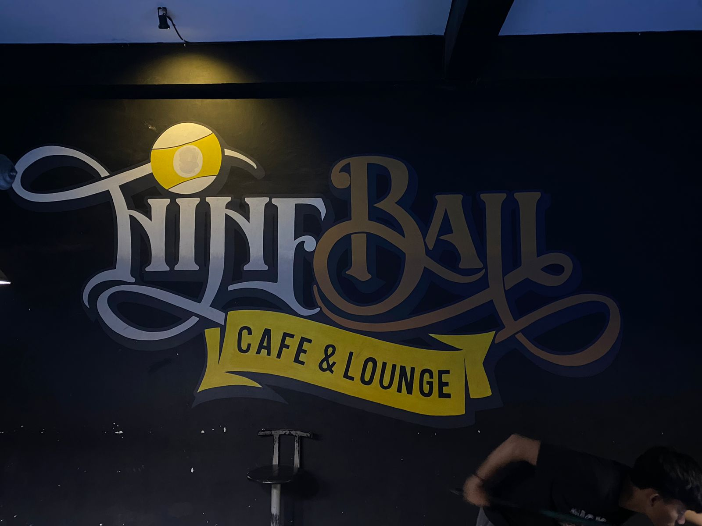
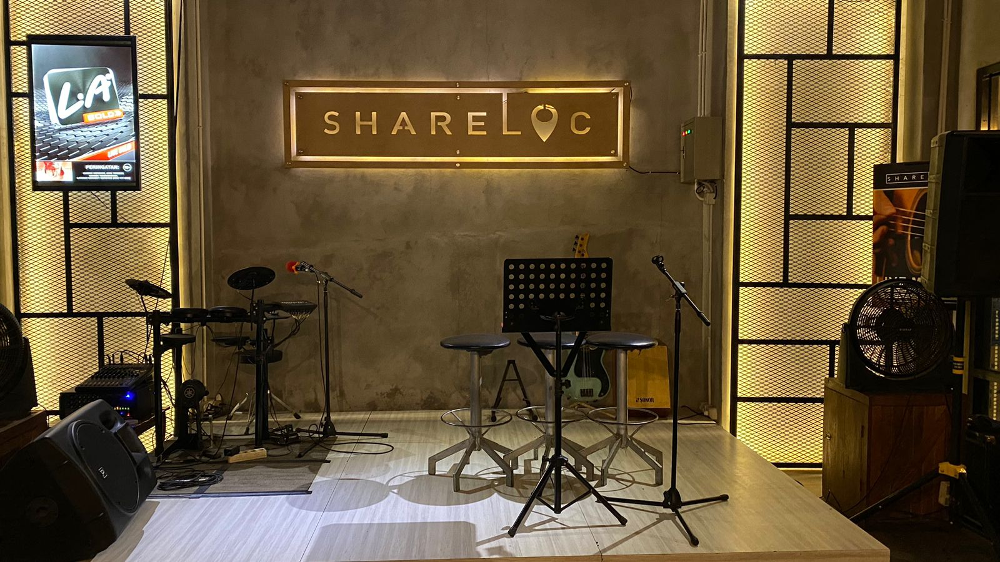

WELCOME TO
SHARELOC
Cafe "Shareloc"
Pada tanggal 13 Maret 2022, Shareloc Cafe dibuka untuk pertama kalinya. Namun, sebelumnya, tempat ini dikenal dengan nama Nineball Cafe & Lounge dan telah menjadi bagian dari komunitas sejak tahun 2016. Sayangnya, pada tahun 2021, cafe ini terpaksa harus ditutup akibat dampak yang ditimbulkan oleh pandemi Covid-19. Pemilik cafe, Asri Buyadi atau yang lebih akrab disapa Pak Uyha, tidak menyerah pada situasi sulit tersebut. Sebaliknya, ia memutuskan untuk melakukan renovasi menyeluruh pada bangunan rumahnya yang berhubungan dengan Nineball Cafe & Lounge.

Proses renovasi bangunan cafe memakan waktu hampir satu tahun lamanya. Namun, hasilnya sungguh luar biasa. Cafe ini tidak hanya mendapatkan wajah baru, tetapi juga konsep baru dan desain yang mengikuti perkembangan zaman. Semua ini dilakukan dengan harapan membawa semangat baru dan terobosan bagi cafe tersebut. Dalam proses renovasi ini, tidak hanya tata ruang yang diubah, namun juga nama cafe tersebut. Pak Uyha memutuskan untuk memberi nama baru, yaitu Shareloc.

Shareloc bukanlah sekadar nama, melainkan sebuah konsep. Nama ini terinspirasi dari istilah yang kini sering digunakan oleh banyak orang dari berbagai kalangan. "Shareloc" adalah istilah yang digunakan ketika seseorang ingin berbagi lokasi kepada teman, keluarga, atau orang lain ketika mereka ingin bertemu di suatu tempat. Dengan nama baru ini, Pak Uyha berharap Shareloc dapat menjadi tempat di mana orang bertemu, lokasi yang sering dibagikan kepada siapapun, dan tempat di mana moment bersama dengan keluarga, sahabat, dan teman-teman dapat diabadikan.

Tidak hanya itu, Shareloc juga dirancang agar menjadi tempat yang instagrammable, di mana orang dapat berbagi momen indah mereka di media sosial. Selain itu, Pak Uyha berharap bahwa Shareloc akan menjadi nama yang mudah diingat oleh orang-orang, membuatnya menjadi tujuan favorit bagi mereka yang mencari tempat hangout yang menyenangkan dan unik.
Dengan semangat baru, konsep baru, desain yang segar, dan manajemen yang berdedikasi, Shareloc resmi dibuka pada tanggal 13 Maret 2022. Cafe ini tidak hanya menjadi tempat untuk bersantai dan menikmati hidangan lezat, tetapi juga menjadi tempat di mana cerita baru dan kenangan indah diciptakan setiap hari.